Australia T20I Team
2021 T20 World Cup winners known for all-round strength.
About Australia T20I Team
Country: Australia
Home Ground: Various (e.g., MCG, Melbourne)
Captain: Mitchell Marsh
Coach: Andrew McDonald
Australia’s T20I team combines aggressive batting, pace bowling, and sharp fielding. Their 2021 T20 World Cup victory marked their dominance in the format.
Australia Players
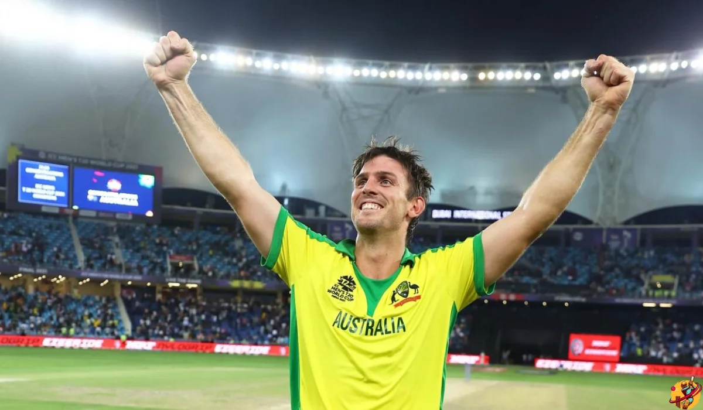
Mitchell Marsh (C)
Captain, all-rounder.
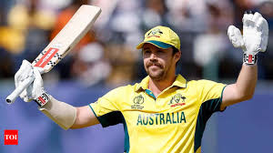
Travis Head
Opener, top-ranked batsman.
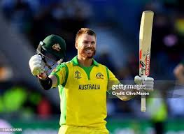
David Warner
Batsman, explosive opener.
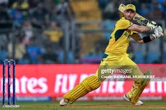
Glenn Maxwell
All-rounder, dynamic hitter.
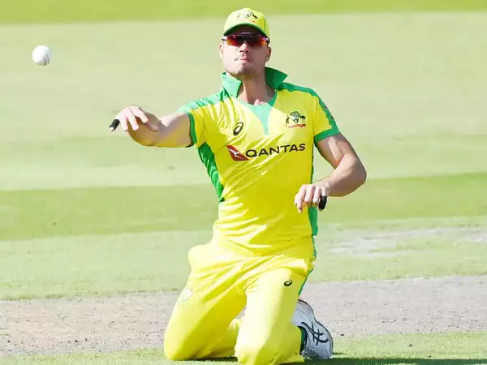
Marcus Stoinis
All-rounder, power-hitter.
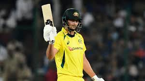
Tim David
Batsman, finisher.
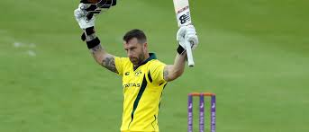
Matthew Wade
Wicketkeeper-batsman, experienced.
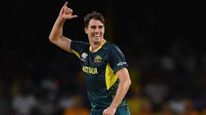
Pat Cummins
Bowler, pace spearhead.
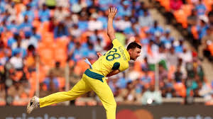
Josh Hazlewood
Bowler, accurate pacer.
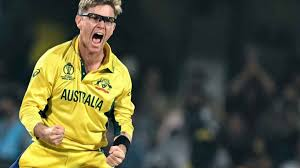
Adam Zampa
Spinner, wicket-taker.
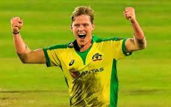
Nathan Ellis
Bowler, death specialist.